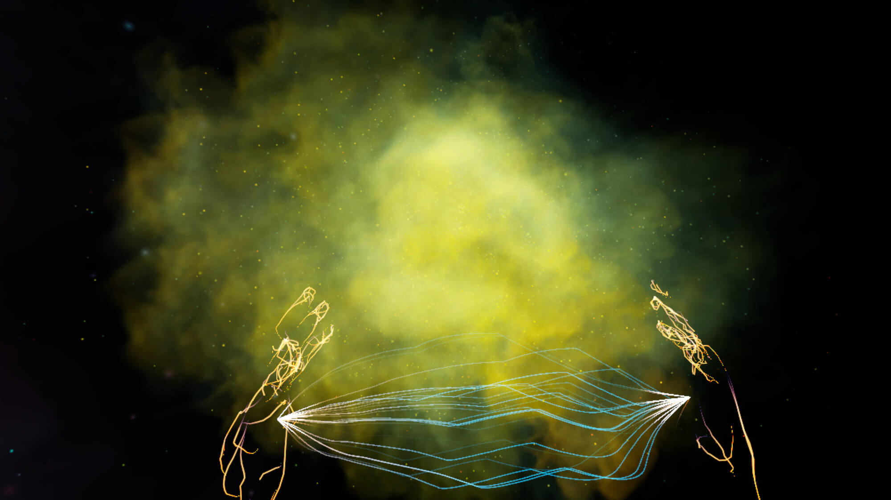

Guided by the compelling voices of Kalina’s siblings, Felicia and François, who, for the past three years, have used their sister’s voicemail as their personal diary, the user will embark on a journey to decipher the whirlwind of mania, psychosis and depression.
Manic-depressives can go for years before realizing and accepting they have a mental illness. Their hallucinations and delusions are part of their reality. They are felt, lived and experienced. So are their struggles.
MANIC is a multi-platform project that includes a feature-length documentary film and virtual reality project. Released alongside the film, the VR experience offers an ambitious and unforeseen dive into the mesmerizing and destabilizing world of bipolarity.
By enabling visitors to see and experience the heightening of senses, the poetic hallucinations and the beautiful but frightening imagination that can accompany manic-depression, this immersive experience aims to raise awareness and build empathy around the real, lived conditions of bipolar disorder.
Through vivid imagery, psychedelic animation and first-person audio recordings of Felicia and François – Kalina’s siblings – visitors are invited to inhabit and see beyond the stages that define bipolarity: mania, psychosis and depression.